一条"看不见"的城市之路
视障者还能如何在城市中前行？
今年的5月17日，是"全国助残日"——每年这个时候，"无障碍建设"都会被更多人提起：它体现在坡道、电梯、语音提示中，展现着一座城市如何理解和回应残障群体的日常需求。而对许多视障者来说，无障碍建设并不只存在于宣传标语里，更落在脚下，落在那一条条中黄色的盲道上。
【导语】
从晨晨居住的地方到她驻唱的酒馆，距离大约750米。
这条路如果是妈妈陪着走，只需要12分钟；但如果让晨晨独自一人拿着盲杖出行，时间会被拉长到半小时，甚至更久。
21岁的晨晨是一位视障歌手，也是武汉城市里2.8万视障群体中的一员。对于普通人来说，750米不过是两首歌的时间；但对于晨晨来说，那多出来的18分钟里，填满了她对未知的恐惧。她不敢走快，因为脚下的盲道并不可靠——随时可能横在路上的车辆、毫无征兆地突然中断的盲道、强硬地楔入盲道砖的路桩……各种障碍总是毫无征兆地出现。
在我们身边，盲道正在遭遇系统性的"失灵"：一条"看不见"的城市之路，正横亘在像晨晨一样的视障者与他们所向往的独立生活之间。
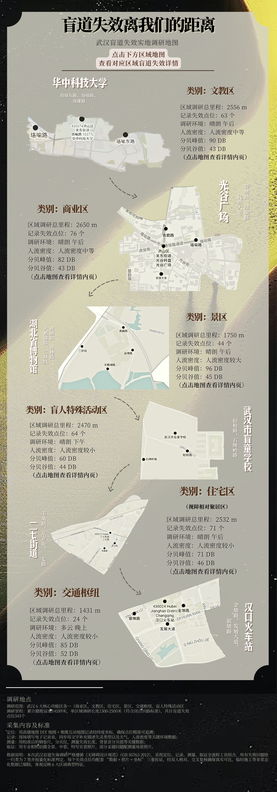
图1：《晨晨的上班之路，都会遇见什么？》
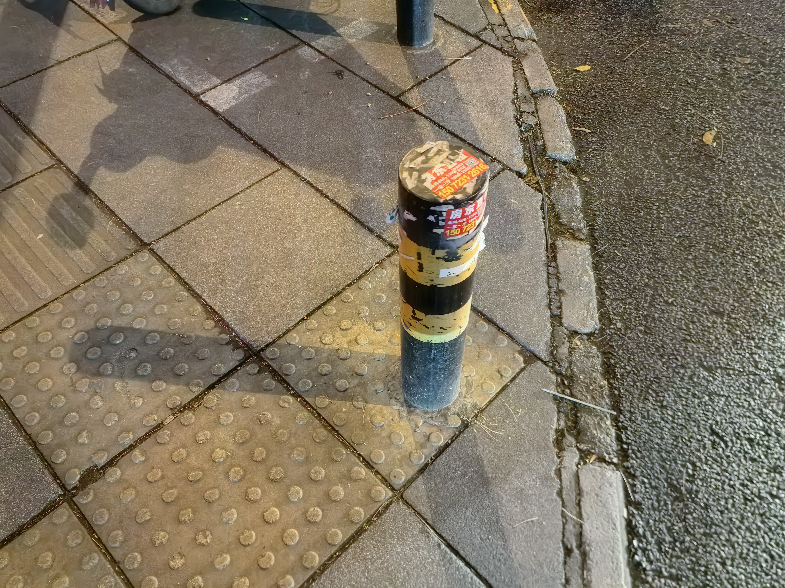
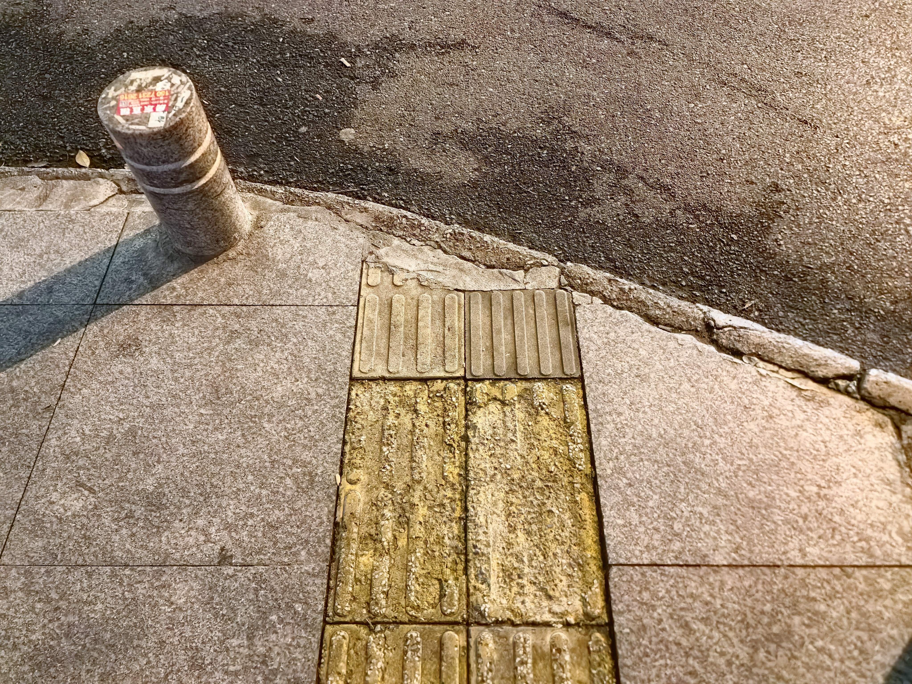
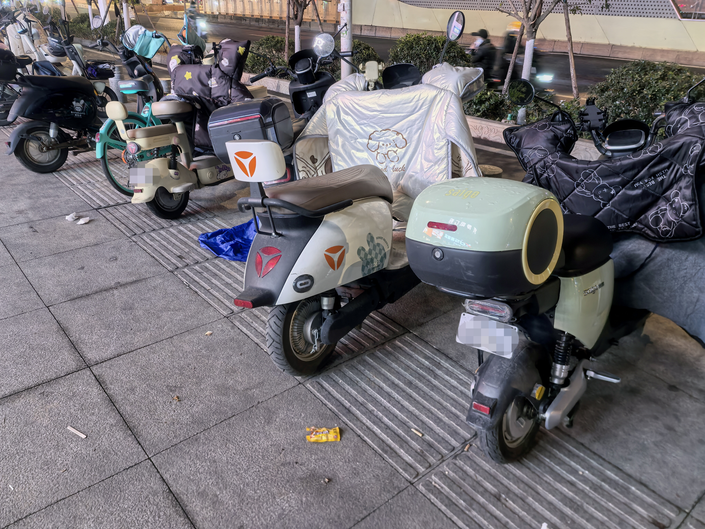
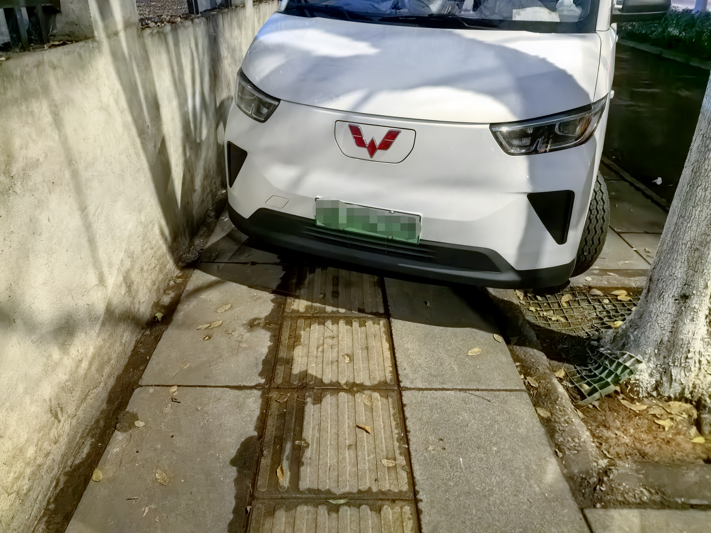
晨晨上班路实地拍摄——盲道"断头"、路面设施占用、汽车堵塞
有多少人需要盲道？盲道本该怎样建设？
我国拥有庞大的视障群体。根据中国残疾人联合会数据，截至2023年，我国残疾人总数为8591.4万，占总人口比重约6.16%，其中视力障碍人数约2856.5万。这一庞大群体的无障碍出行需求，构成了城市盲道系统建设的基础。
自1989年颁布《方便残疾人使用的城市道路和建筑物设计规范（试行）》以来，我国已逐步构建起完善的法律保障体系。2023年9月实施的《中华人民共和国无障碍环境建设法》明确规定，任何单位和个人不得擅自改变无障碍设施的用途或者非法占用、损坏无障碍设施。
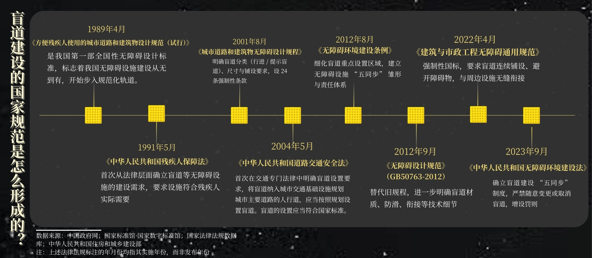
图2：《盲道建设的国家规范是怎么形成的？》
2012年开始实施的国家标准《无障碍设计规范》则将盲道系统精细划分为引导直线通行的行进盲道（条状形）与警示位置变化的提示盲道（圆点形），对盲道砖纹路凸起高度（4mm）、铺设连续性、宽度（25-50厘米）、防滑材质及中黄色对比色等都做出了具体规定。
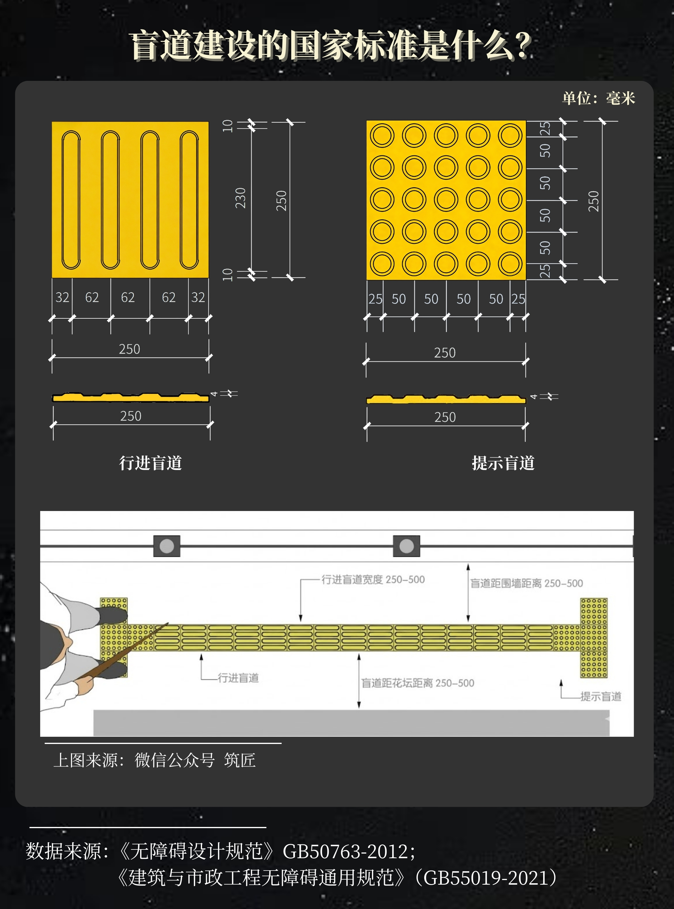
图3：《盲道建设的国家标准是什么？》
在国家标准之外，一套覆盖全国的地方无障碍法规体系也已形成。安徽、北京、福建、甘肃、广东等超过20个省区市出台了各自的无障碍环境建设与管理条例，不仅将国家要求具体化，更展现出前瞻性探索：福建配套了从设计、施工到排查的完整标准体系；上海将无障碍设计纳入施工图强制性审查；重庆则专门为其山地地形制定了特色无障碍法则。
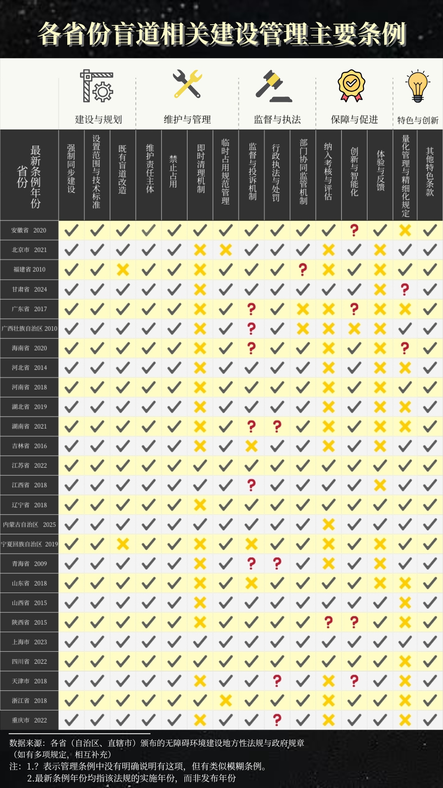
图4：《各省份盲道相关建设管理主要条例》
然而，视障者脚下的现实却始终滞后于纸面的进步。
"就是那个时候觉得大城市真好，"晨晨回忆初到武汉时的印象，"连地铁里都有盲道，并且都这么清晰——小县城就没有。"
这份对城市无障碍水平的信任与期待，在她尝试独立出行后，迅速被遭到占用的盲道、突兀的断头路与无处不在的障碍击碎。
盲道失效究竟有多严重？
盲道失效与我们之间的距离
制度与现实之间的落差，究竟体现在哪些具体场景中？盲道"看似存在却难以使用"的问题，在城市中普遍到何种程度？
为了回答这些问题，我们在武汉市范围内开展了实地调研，覆盖商业区、文教区、住宅区、景区、交通枢纽及视障学校周边等六类区域，以系统评估城市盲道现状。
调研数据显示，物理占用是出现频率最高的问题之一，占比达到36.4%。在340条总记录中，122条涉及物理占用问题。其中非机动车占63条，临时堆放占52条，机动车占37条，井盖占30条，摊贩占18条，电动车占15条。
这些占用行为不仅迫使视障者绕行，也在无形之中传递出一种信号：盲道是可占的、无用的。
同时，我们的调研几乎都在"晴天，午后高峰"进行——这正是视障者出行的高频时段。但这个时段往往伴随着高背景音量（普遍在43-96分贝，平均值58.3分贝）与密集人流，进一步放大了盲道失效的风险。
晨晨对此深有体会："太吵的话，耳朵会放大这个声音，用盲杖探索路况时就会没有安全感。"但她也说："但太安静了，我又会觉得被人盯着看。"
点击地图上的标记查看各调研点位实景
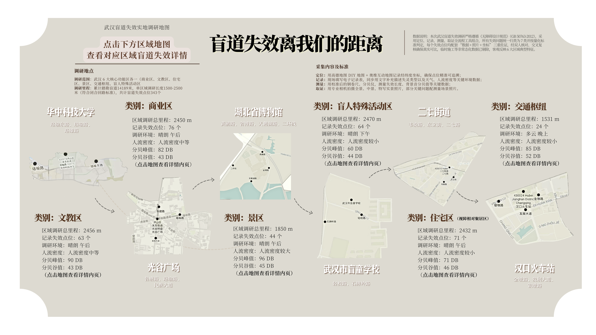
图5：《实地调研地图》——点击标记查看各点位实景
社交媒体中的盲道讨论
"印象特别深刻的是有一次去上班，正好高峰期，我就想靠着路边走，然后就——磕到了。"晨晨回忆道，"那个电瓶车就停在离盲道很近的边上，虽然不是很疼，但在心里也会有点难受吧。"这样的磕碰，对她而言已不是偶然。
我们从微博、小红书、抖音、知乎、豆瓣共抓取1307条关于盲道话题的有效讨论数据，通过对数据进行编码分析发现，"盲道被车辆占用"以22.1%的占比成为最突出的痛点，共有289条讨论直指这一现象——电动车、共享单车、机动车，这些为城市生活提速的交通工具，却成了盲道上最顽固的"移动路障"。
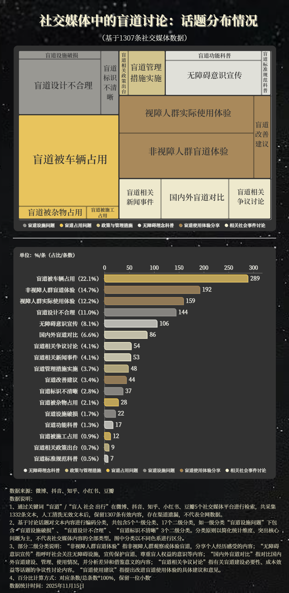
图6：《社交媒体中的盲道讨论：话题分布情况》
深入分析这些讨论，"视障人群实际使用体验"也是一大声量较高的议题，占比12.2%。这意味着，在每10条关于盲道的网络讨论中，就有超过1条是视障群体在倾诉他们使用盲道的真实困境。这些来自视障者的一手声音，与晨晨的经历形成了跨越屏幕的共鸣。当晨晨"只能紧紧靠着路边走"，被外卖小哥差点撞到的时候，网络上正有159条讨论在述说相似的遭遇。
这些冰冷的数字背后，是一个个具体的困境。
微博视频中，陕西西安一位盲人的日常出行让人揪心。他沿着盲道行走，却不得不为占用盲道的电动车一次次说着"不好意思"。这声"不好意思"背后，是盲道被侵占的无奈现实。更令人心痛的是，在这段被占用的盲道上，他两次撞上路边的灯柱，最终不得不俯下身子，用手触摸地面，靠最原始的方式确认盲道的位置。
信访数据：每2条投诉，就有1条来自物理占用
2025年11月，北京12345热线收到一条投诉：某购物中心门口人为设置栏杆，堵住了轮椅通道和无障碍设施。这条记录，只是物理占用类问题的其中一例。在我们收集到的355件信访案例中，单纯的物理占用就有158件，占比44.5%。换句话说，大约每2条投诉，就有1条是因为盲道、坡道等被"堵"住了。

图7：《盲道失效，谁是"绊脚石"？》
而在各种占用行为中，车辆无疑是"主力"。2018年，就有上海市民反映"盲道被非机动车占满，视障者只能冒险走机动车道"。城建设施也常成为"拦路石"：2024年，天津某路段盲道一端尽头是垃圾箱，转弯处竟立着路牌。投诉人回忆："曾看见一位盲人大爷用盲杖反复试探，始终找不到路……最后是我扶他走出来的。"
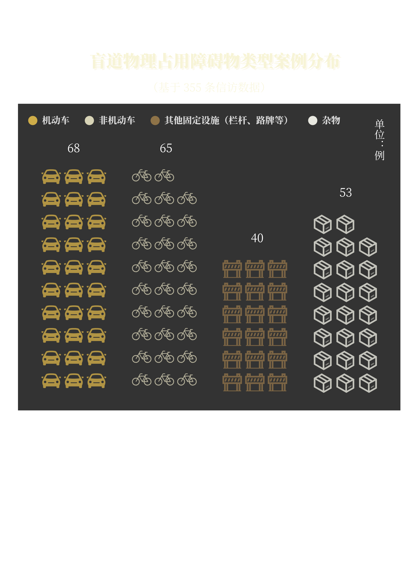
图8：《盲道物理占用障碍物类型案例分布》
更令人无奈的是，这类问题早已持续多年。从2007年北京出现"车辆占盲道"投诉，到2025年仅北、上、渝、津四城的相关记录就累计62件。二十年间，占用形式从自行车变成电动车，从临时停靠到长期占据，盲道"被堵"的剧情，却始终在城市中反复上演。
那些藏在细节里的系统性隐患
比占用更隐蔽、更令人忧心的，是盲道本身存在的系统性问题。
尽管《无障碍环境建设法》已经明确规定了盲道设施的法律地位，但在现实执行时，标准往往被打了折扣。在355条信访投诉记录里，46件指向设施破损，51件涉及设计缺陷——这意味着，即便没有外来占用，有些盲道本身也"不可靠"。
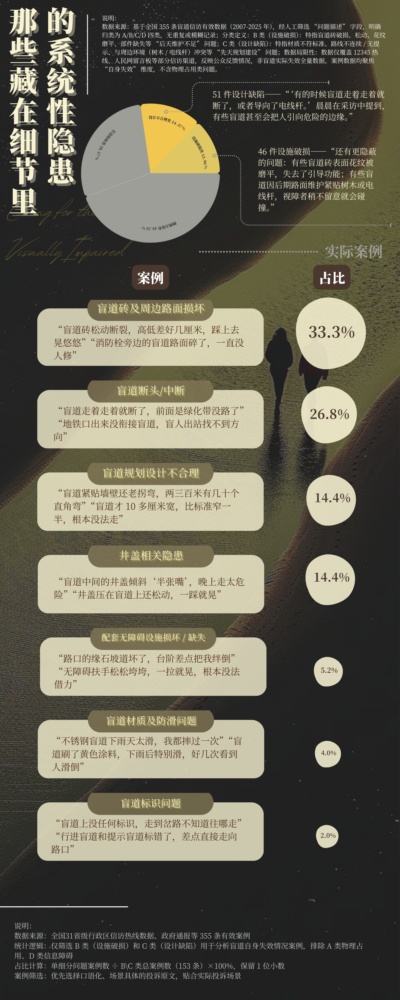
图9：《那些藏在细节里的系统性隐患》
"有的时候盲道走着走着就断了，或者突然指向电线杆。"
晨晨在采访中提到，在她日常行走的路径上，有些盲道会将人导向台阶边缘或绿化带，甚至是正呼啸而过的车流旁。
盲道为何失灵：被困住的认知
晨晨曾拨打过投诉电话。听筒那头的答复是"会向相关部门反映"，之后便没了下文。这份悬而未决的沉默，与355条信访记录、1307条网络反馈共同指向一个现实：盲道的系统性失灵，背后是一条环环相扣的责任链条。
设计、施工与维护环节的缺陷，共同构成了这条链条的前端。规划图纸可能符合规范宽度，却忽略了使用的连续性；施工追求交付速度，有时牺牲了砖块的耐久与防滑；管理缺乏长效巡查，难以遏制侵占。
然而，将这些结构性缺陷最终转化为日常困境的，往往是链条的末端——一种普遍存在的社会认知与行为模式。

图10：《社交媒体中的盲道讨论，都在说什么？》
盲道为何总是被占用？
盲道为何总是被占用？晨晨给出了一个视障视角的答案：
"很多人认为盲道根本不会有盲人走，所以他们觉得车停在上面也没关系。"
这似乎陷入了一个死循环：盲道难走，视障者便不敢出门；路上看不到视障者，公众便误以为盲道无人使用，从而更加肆无忌惮地占用。
这个循环带来的认知影响沉痛而深切。
数据显示，在社交媒体的讨论中，对盲道话题持消极态度的比例为79.26%，占绝对多数；而持积极和中性态度的讨论分别只占11.71%和9.03%。"占用""不合理""呼吁""问题"……这些高频出现的词语，共同勾勒出了公众眼中的盲道"印象"——系统性失灵似乎难以扭转。
我们如何拯救"失灵"？
但变化也正在发生。
目前已收集到的数据中，从2020年到2025年，全国信访渠道关于盲道问题的投诉量增长了19.4倍。
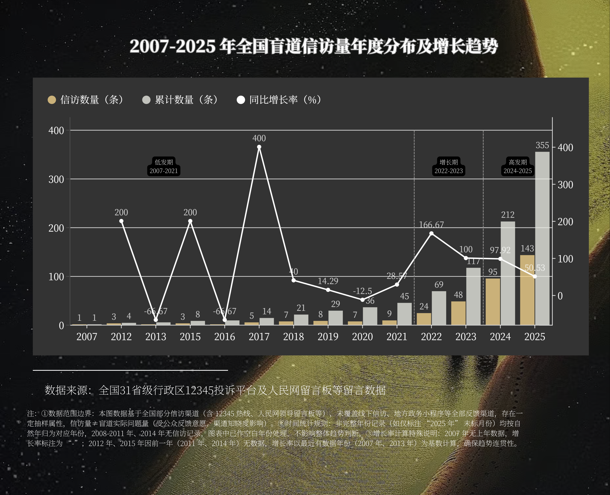
图11：《2007-2025年全国盲道信访量年度分布及增长趋势》
数据背后，不仅是问题的暴露，更是公众权利意识的觉醒——不仅是视障者的发声，越来越多的普通民众也开始关注并反思这一系统性问题。
一些地方政府已着手从技术、监管与共治多个维度尝试改进。在施工与质量环节，郑州、青岛等地开展了盲道重点整治行动，将盲道维护与城市改造有机结合。在管理与执法层面，南京设立了专门的盲道执法巡查队伍，通过社会监督平台实现问题从受理到反馈的闭环；重庆试点智能盲道监测系统，通过监控识别发现占用行为并实时上报。在综合共治方面，北京、上海以政府主导、部门协作、社会参与等多方合力，共同推进无障碍环境的有效建设。
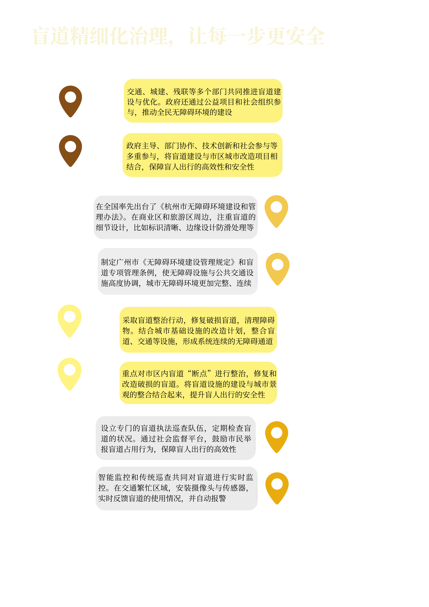
图12：《盲道精细化治理，让每一步更安全》
但最根本的，依然是公众认知的真正回转——当人们不再认为车停在盲道上"没关系"，当视障群体的需求不再被忽视，盲道才能发挥它本该有的作用。
【结语】
晨晨依然向往着能像普通人一样在城市里自由穿行。她听说深圳的无障碍设施做得更好，甚至考虑以后去那里发展。在她的描述中，理想的盲道并不需要多么复杂高深，只需要它能够被规范地铺好，被干净地空出来。
"我遇到一个好的盲道时，能走得特别快，真的。"晨晨说。
那不仅仅是速度的提升，更是一种生而为人的尊严。当盲道不再失灵，当"晨晨们"能以正常人的速度走在阳光下，这一条条黄色的城市之路，才算真正被"看见"。
我们始终希望，
盲道的现实不再背离于治理的进步，
视障者的步伐不再因盲道失灵而难以迈出。
一条通畅、合理的盲道，
连接的不仅是视障群体的便利生活，
更是那尽管失去光明与色彩，
却依旧与我们一样渴求自由的千万个灵魂。
参考资料
数据来源及说明- [1] 中国政府网
- [1] 图解｜什么阻碍了1731万盲人出门？ https://www.thepaper.cn/newsDetail_forward_9290825
- [2] 中国残疾人联合会
- [2] 人民网｜国际盲人节：在他们身上，听见光的声音 https://mp.weixin.qq.com/s/Y21XKJvkqwZ7yvxz3fG3WA
- [3] 中华人民共和国住房和城乡建设部
- [3] 中国有1730万盲人，为什么我们很少看到他们！ https://mp.weixin.qq.com/s/cNMntemrswRUOxWeHCQy1Q
- [4] 内行看门道——《室外盲道规划设计标准》发布 https://mp.weixin.qq.com/s/7oAJuAquTFppFDTbzM8VFg
- [4] 全国盲道失效投诉案例：全国范围内盲道相关投诉记录（含人民网留言板、信访平台、12345投诉平台、媒体报道等），数据整合时间2025年11月12日
- [5] 民生智库｜盲道为什么"不帮盲"——我国盲道现状、优秀经验与治理路径 https://mp.weixin.qq.com/s/SaaDoq19qRit0-AvM0jJIA
- [5] 社交媒体数据：通过搜索引擎和网络爬虫技术，在知乎、微博、抖音、小红书、豆瓣5个主流社交媒体平台进行关键词"盲道"/"盲人社会出行"定向搜索并爬取搜索结果。数据爬取截止至2025年11月15日
- [6] 实地调研数据：来源于团队于武汉市开展的盲道失效情况实地调研。调研选取商业区、文教区、住宅区、交通枢纽、景区及盲人特殊活动区等6类典型城市空间，覆盖不同时段与使用情境。调研以现场观察为主，结合轨迹记录、地图标注与影像采集，对盲道占用、铺设不规范、中断等失效情况进行标准化记录与评估。所有数据均为一手实地采集资料，用于呈现盲道在真实城市环境中的实际使用状况。
- [6] 夏菁, 陈宏胜, 王兴平. 残疾人视角的无障碍设施低使用率研究——以南京市为例[J]. 城市规划, 2020, 44(12): 47-56.
- [7] 吴悦, 薛平聚, 武梦竹等. 城市无障碍设施现状分析及改进意见——以石家庄市盲道为例[J]. 中国康复理论与实践, 2017, 23(4): 485-487.
- [8] 王草, 吕军, 谢辉等. 基于《无障碍设计规范》的超大城市道路交通人行道无障碍建设状况评价——以上海市为例[J]. 中国康复理论与实践, 2021, 27(10): 1225-1232.
华中科技大学新闻与信息传播学院
小组成员：柏一茗、谭棋月、王颂佳、谢天一、赵星妍（按姓氏首字母排序）
指导老师：华中科技大学新闻与信息传播学院 徐迪